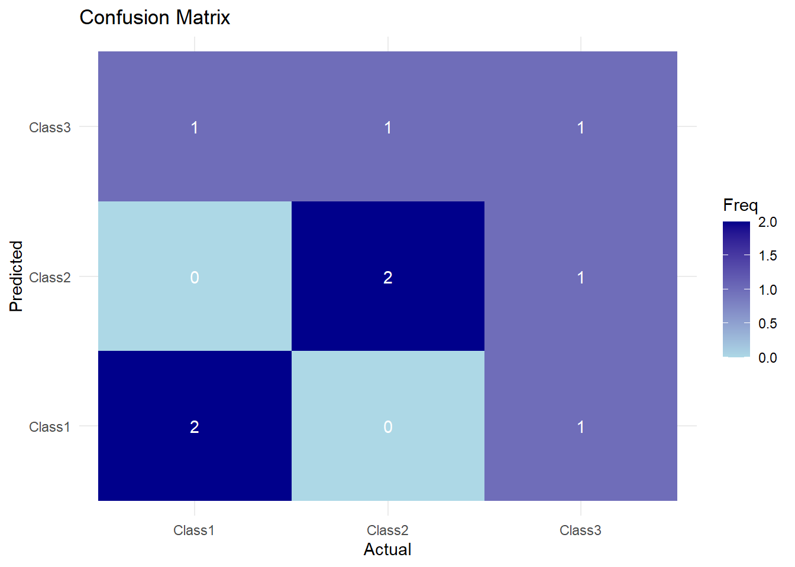

Companies commonly collect unstructured textual data containing insights into consumer preferences and behavior (e.g., customer reviews, feedback surveys, support tickets, or other product feedback channels). Historically, quantifying and analyzing these data has been challenging because traditional topic modeling or natural language processing methods are complex, opaque, and not always insightful. The advent of LLMs, however, has dramatically simplified the process of analyzing unstructured text and improved the quality of the resulting output.
This page provides a demonstration of the process by which an analyst can use LLMs to code and quantify unstructured textual data. The process involves four steps:
Define the codes (variables) to be applied to the unstructured textual data.
Using your preferred LLM’s API, submit the unstructured textual data to the LLM alongside prompts for each code. Specify that results be returned in JSON format.
Validate the accuracy of the resulting LLM-coded output against a small subset of human-coded observations. Repeat Steps 1-3 as necessary.
Analyze the resulting quantitative data as desired.
[tbd: brief discussion of extensions and uses cases]
Data
We’ll use data on car reviews scrapped from Edmunds.com and made publicly available on Kaggle. The data contain the review date, vehicle brand, review text and title, and the customer’s overall satisfaction rating on a scale of 0 to 5 for 206,000+ reviews submitted between 2004 and 2018. Our goal is to code the sentiment of each review (pretending that we don’t already have the numeric satisfaction rating), as well as various metrics that we might be interested in tracking overtime, such as whether the review references reliability, safety, drive characteristics, or other variables of interest.
p <-ggplot(df.bymonth, aes(x=reviews.month, y=mean.rating, group=country, color=country)) +#geom_linegeom_smooth()p
LLM-Assisted Coding
View the data:
make
Review_Title
Review
infiniti
EXCELLENT Vehicle!!
Being the second owner of this car for 7 years now, I really have no complaints. It has been one of the best vehicles I’ve ever owned.
honda
Brake Dust
We have owned several Hondas. This is the first to have brake dust! We traded in a CRV that did not do this. The 09 model does w/ less than 1300 miles.
nissan
Never buy Nissan
I bought a 2003 Nissan Altima with 165,000 miles on it about 4 months ago. In those 4 months I had to replace; camshaft position sensor, radio, 2 door handles, and alternator. Before the timing chain skipped a few teeth at 169,000 miles. It’s just a money pit I’m getting rid of it. Anybody need a parts car?
toyota
02 PRIUS
We’ve had the 02 Prius for about 2 years (our first Prius), and our experience has been great.In fact we bought an 08 Prius and gave the 02 to our son to drive to school.I expect we will always have Prius for the foreseeable future. Gas mileage is lower in winter (35-39), and as high as 48 mpg in summer on a 700 mile road trip. It’s still weird when the engine shuts down when at a stop light….but that’s just money in my pocket !There have been zero-nada problems with anything. It just purrs along all the time.We like the 08 even better because Toyota updated many things like a a fold down rear seat, better stereo radio, and even more room in back seat.
jeep
First new car
My wife and I are newlyweds, and we have never owned are own car before. I have driven demos my whole life and my wife has driven her parents 98 Malibu since it was new. We ordered the unlimited Sahara on 3/4/09 and we got it on 3/23/09.
toyota
Lovin’ It
Overall, I love my Prius. I do a lot of driving and have only good things to say about it. I don’t get 60 mpg but, I’m a fast driver and you’d have to consistently go 30 mph to get the 60 rating in my particular car. I average 45-50. I only have to gas up twice a month!! When I first got it 2 yrs. ago people would point and stare when I drove it. I was the first one in town to have one, so it was an oddity. Now, I get the thumbs-up and I’m seeing more and more of them around town. I can’t say enough good things about it.
ford
Econoline
Have 7000, perfect performance, no
faults, 20 mpg
buick
No Longer Own Ours… Buyer Beware!!!
When the Enclave is working properly, it is an excellent car. Quiet, comfortable, and fairly powerful for an SUV. However, there was rarely a time where everything was in proper working order. Our first major issue was the entire throttle body going out, which also caused the entire electrical system to crash, leaving us stranded on the side of a busy road, partially blocking traffic. This experience also gave us a chance to try out Onstar, which was worthless. The hazards also drained the battery after one hour, so they didn’t work. After that, buttons snapped off, brakes needed replacement, transmission, and power steering prob. We just bought a fully loaded 2014 Infiniti QX60 and love it!
ford
It’s a van, not a lamborghini
We purchased the 12 passenger 2015 van, 350 low roof with swinging side doors (not the sliding doors).We previously had a GMC K2500 Suburban.Before buying we test drove the Nissan NV 12/15 passenger van.Pros:Great fuel efficiency! We are averaging 18mpg, however we do live in the country so stop and go driving is not as frequent as those living in town. When in the Big Apple for the day (not NY!, we live in Idaho!) we may see closer to 14-16mpg. We drove a 10hour road trip and averaged closer to 19mpg at about 65-70mph (assuming the electronic mileage gauge is accurate).Great get-up and go power. From 0 to 40 it gets there faster than my GMC V8 454 7.4 liter, easy.Love the cargo space in the back.Chose the swinging doors over the slider b/c we understood the slider to wear out. The swinging doors swing 180 degrees! So long as you have clearance from the car next to you to swing 90 degrees, you can make it 180.Passenger seats have the ability to recline (comparable to airplane seats), which is better than nothing at all, or the new Nissan NV and the old E-series. Fairly comfortable for the kids. Our configuration allows you to pull out the back row in sets of two. Other configurations vary.Fun to drive! Fairly quite compared to the suburban and the new Nissan NV. Great visibility, great side mirrors.Headrests on every seat! Good (proportionally balanced) size for comfort and rear view mirror visibility.Neutral:The rear view mirror is essentially there to see the kids. The back door latches block any visibility to utilize it otherwise, despite how big or small it is.The backup camera is nice. Color coding, beeps at you. The screen could be a little bigger, but sufficient for the job.Cons:The pilot seats are okay, not as comfortable as the suburban was. Weak lumbar support, so for long trips we will have to add some support here. The back row is not as adult friendly for more mature bottoms. Could use additional child latches throughout. There are only three on our model.Had to add a tow package myself.Conclusion:4 star, would have given it 5 if the captain chairs had better lumbar support. Fun to drive, smooth on the road. Great power. Adequate cargo space in the back (more than the suburban).Update: 2 years later…My wife loves driving this van. The major draw back, does not do well in snow/mud conditions. We live in mountainous area where snow and off road experiences are not unusual. It would be nice to have the 4x4 option on this. Kits are very difficult to come by at an affordable price if you can find them for the transit. We have placed 12,000+ miles on the van since purchase and this update.
lexus
6 years later and still loving my RX-300
Justed changed by rear tail-light on my 2003 RX-300 and got to thinking that besides a set of tires and oil changes I haven’t had to do anything to this truck. It still rides like a new car and I’m getting 17 MPG in town and 26 on the road. What more could you want from a car. My dealer is great for normal service (but high priced, I guess they all are) but I always drive off with a job well done. Might go for a 2010, but it would take a lot to get me out of this model, and have car payments all over again!
Code the data:
library(ellmer)chat <-chat_openai(model ="gpt-4o-mini",system_prompt ="You are a friendly but terse assistant.",)# confirm chat is connected to APIchat$chat("Is R a functional programming language?")
Yes, R supports functional programming, allowing functions to be treated as
first-class citizens, enabling higher-order functions, and facilitating
functional paradigms. However, it also supports imperative and object-oriented
styles, making it a multi-paradigm language.
prompt<-paste("Please car review the an owner submitted to Edmunds.com, a popular website for reviewing cars. Review the response carefully and code the following variables:")response_coded <-type_object( prompt,sentiment =type_enum("Extract the sentiment of the review", c("positive", "neutral", "negative")),gpt_Rating =type_number("Based on this review, how do you think the owner would rate their vehicle? Use a numeric scale from 0 to 5, where 0 is very negative, and 5 is very positive."),reliability =type_integer("1 if the owner references the vehicle's reliability in their review, 0 otherwise"),utility =type_integer("1 if the owner references the vehicle's utility features in their review, 0 otherwise"),driving =type_integer("1 if the owner references the vehicle's driving characteristics in their review, 0 otherwise"),comfort =type_integer("1 if the owner references the vehicle's comfort in their review, 0 otherwise"),interior =type_integer("1 if the owner references the vehicle's interior features in their review, 0 otherwise"),fuel_efficiency=type_integer("1 if the owner references the vehicle's fuel efficiency in their review, 0 otherwise"),technology =type_integer("1 if the owner references the vehicle's technology features in their review, 0 otherwise"))# DEMO STRUCTURED DATA FUNCTIONtext <-paste(df[165,"Review"])text
[1] "I traded my 05 Bonneville for the 05 Magnum SXT RWD 3.5L. I am 19 and this is the perfect car- it's definitely a sporty college kid car, and I got mine with under 20k miles for under $10k. What a steal! Gas mileage is not bad. I get 21mpg driving around town but I do a lot of interstate driving and i maintain 25-27mpg. Not better than my Bonneville no, but it certainly gets just as good gas mileage as any other car on the road today. I only wish I had a Magnum R/T. I want the dual chrome exhaust with the Hemi!"
chat <-chat_openai()coded.review <- chat$extract_data(text, type = response_coded)str(coded.review)
List of 9
$ sentiment : chr "positive"
$ gpt_Rating : num 4.5
$ reliability : int 0
$ utility : int 0
$ driving : int 0
$ comfort : int 0
$ interior : int 0
$ fuel_efficiency: int 1
$ technology : int 0
# code a subset of responsesdf.sub <- df |>slice_sample(n =10)result =NULLfor (i in1:nrow(df.sub)) { out <- chat$extract_data(paste(df.sub[i,"Review"]), type = response_coded) result<-rbind(result,cbind(df.sub[i,"index"],as.data.frame(out)))}glimpse(result)
# confusion matrix approach# Define the bin breaks and labelsbin_breaks <-c(-Inf, 2.5, 3.5, 5)bin_labels <-c("Negative", "Neutral", "Positive")# Use cut() to bin the Rating variabledf <- df %>%mutate(Rating_cat =cut(Rating, breaks = bin_breaks, labels = bin_labels, include.lowest =TRUE))# Load necessary librarylibrary(caret)# Example data: Actual and predicted classesactual <-factor(c("Class1", "Class2", "Class3", "Class1", "Class2", "Class3", "Class1", "Class2", "Class3"))predicted <-factor(c("Class1", "Class2", "Class3", "Class1", "Class2", "Class2", "Class3", "Class3", "Class1"))# Ensure both actual and predicted have the same levels (classes)levels(actual) <-levels(predicted) <-c("Class1", "Class2", "Class3")# Generate the confusion matrixconf_matrix <-confusionMatrix(predicted, actual)# Print the confusion matrixprint(conf_matrix)
Confusion Matrix and Statistics
Reference
Prediction Class1 Class2 Class3
Class1 2 0 1
Class2 0 2 1
Class3 1 1 1
Overall Statistics
Accuracy : 0.5556
95% CI : (0.212, 0.863)
No Information Rate : 0.3333
P-Value [Acc > NIR] : 0.1448
Kappa : 0.3333
Mcnemar's Test P-Value : NA
Statistics by Class:
Class: Class1 Class: Class2 Class: Class3
Sensitivity 0.6667 0.6667 0.3333
Specificity 0.8333 0.8333 0.6667
Pos Pred Value 0.6667 0.6667 0.3333
Neg Pred Value 0.8333 0.8333 0.6667
Prevalence 0.3333 0.3333 0.3333
Detection Rate 0.2222 0.2222 0.1111
Detection Prevalence 0.3333 0.3333 0.3333
Balanced Accuracy 0.7500 0.7500 0.5000
# Load necessary librarylibrary(ggplot2)# Convert confusion matrix to a data frameconf_matrix_df <-as.data.frame(conf_matrix$table)# Plot the confusion matrixggplot(conf_matrix_df, aes(x = Reference, y = Prediction, fill = Freq)) +geom_tile() +geom_text(aes(label = Freq), color ="white") +scale_fill_gradient(low ="lightblue", high ="darkblue") +labs(title ="Confusion Matrix",x ="Actual",y ="Predicted") +theme_minimal()

Disaggregation
results by American, European, Japanesse, and South Korean automakers